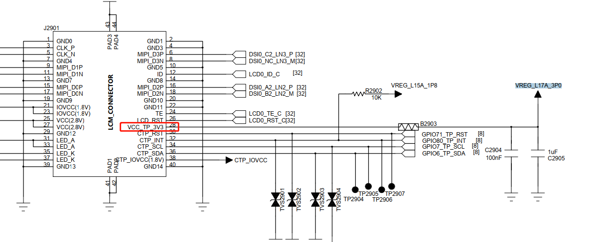

qcom qcm2290 功耗调试记录
记录一下qcm2290平台功耗调试记录。
系统无法休眠调试
先清掉bugreport，休眠一段时间并导出：
adb shell dumpsys batterystats --reset
adb shell dumpsys batterystats --enable full-wake-history
adb bugreport
首先抓取bugreport看一下，发现是内核持锁：

查看持锁如下ws_charge和4a84000.qcom,qup_uart：
ws_charge中的最后一个参数是1668485，prevent_suspend_time表示阻止系统休眠时间，基本上打开后就没进行释放。
A665x:/ # cat d/wakeup_sources | grep charge
xxxxx-base-charger 2 2 0 0 0 74 37
6373 0
charger suspend wakelock 282 282 0 0 39 19702 323 1676089 0
xxxxx-charger 7 7 0 0 0 1005 299 1284884 0
ws_charge 1 1 0 0 1668485 1668485 1668485
7643 0
ws_charge是在xxxxx-battery-class.c中注册的wakelock，用于休眠后防止过放，通过计算放电时间唤醒系统，这个功能已经放到bms中做了。之所以持锁，是因为没有进行释放，干脆直接去掉。
--- a/UM.9.15/kernel/msm-4.19/drivers/misc/xxxxx/power/xxxxx_battery_class.c
+++ b/UM.9.15/kernel/msm-4.19/drivers/misc/xxxxx/power/xxxxx_battery_class.c
@@ -807,6 +807,7 @@ int xxxxx_battery_set_status(int new_status)
status = POWER_SUPPLY_STATUS_NOT_CHARGING;
}
+#ifndef CONFIG_xxx_BMS
if (g_xxxxx_battery_dev) {
if (status == POWER_SUPPLY_STATUS_CHARGING) {
if (!g_xxxxx_battery_dev->ws_charge->active)
@@ -816,6 +817,7 @@ int xxxxx_battery_set_status(int new_status)
__pm_relax(g_xxxxx_battery_dev->ws_charge);
}
}
+#endif
xxxxx_battery_sply.BAT_STATUS = status;
xxxxx_battery_supply_changed();
@@ -989,7 +991,10 @@ struct xxxxx_battery_device *xxxxx_battery_device_register(const char *name,
return ERR_PTR(ret);
}
battery_dev->ops = ops;
+
+#ifndef CONFIG_xxx_BMS
battery_dev->ws_charge = wakeup_source_register(NULL, "ws_charge");
+#endif
g_xxxxx_battery_dev = battery_dev;
另外关于锁4a84000.qcom,qup_uart是谢工改出来的，将串口改成了永不休眠，修改如下可避免：
--- a/UM.9.15/kernel/msm-4.19/drivers/tty/serial/msm_geni_serial.c
+++ b/UM.9.15/kernel/msm-4.19/drivers/tty/serial/msm_geni_serial.c
@@ -3636,7 +3636,7 @@ static int msm_geni_serial_probe(struct platform_device *pdev)
pm_runtime_set_suspended(&pdev->dev);
//[feature]-modify-begin xielianxiong@xxxxx.com,20220826,for msm-geni-serial-hs uart close auto sleep
- pm_runtime_set_autosuspend_delay(&pdev->dev, -1);//150
+ pm_runtime_set_autosuspend_delay(&pdev->dev, 150);//150
去掉以上两个锁后系统正常进入休眠：


RTC中断每10分钟唤醒一次
发现机器休眠后没10分钟一次pm8xxx_rtc_alarm唤醒，如下：

pm2250.dtsi:
pm2250_rtc: qcom,pm2250_rtc {
compatible = "qcom,pm8941-rtc";
interrupts = <0x0 0x61 0x1 IRQ_TYPE_NONE>;
};
drivers/rtc/rtc-pm8xxx.c:
static irqreturn_t pm8xxx_alarm_trigger(int irq, void *dev_id) //中断处理，清中断
{
struct pm8xxx_rtc *rtc_dd = dev_id;
const struct pm8xxx_rtc_regs *regs = rtc_dd->regs;
unsigned int ctrl_reg;
int rc;
unsigned long irq_flags;
rtc_update_irq(rtc_dd->rtc, 1, RTC_IRQF | RTC_AF);
spin_lock_irqsave(&rtc_dd->ctrl_reg_lock, irq_flags);
/* Clear the alarm enable bit */
rc = regmap_read(rtc_dd->regmap, regs->alarm_ctrl, &ctrl_reg);
if (rc) {
spin_unlock_irqrestore(&rtc_dd->ctrl_reg_lock, irq_flags);
goto rtc_alarm_handled;
}
ctrl_reg &= ~regs->alarm_en;
rc = regmap_write(rtc_dd->regmap, regs->alarm_ctrl, ctrl_reg);
if (rc) {
spin_unlock_irqrestore(&rtc_dd->ctrl_reg_lock, irq_flags);
dev_err(rtc_dd->rtc_dev,
"Write to alarm control register failed\n");
goto rtc_alarm_handled;
}
spin_unlock_irqrestore(&rtc_dd->ctrl_reg_lock, irq_flags);
/* Clear RTC alarm register */
rc = regmap_read(rtc_dd->regmap, regs->alarm_ctrl2, &ctrl_reg);
if (rc) {
dev_err(rtc_dd->rtc_dev,
"RTC Alarm control2 register read failed\n");
goto rtc_alarm_handled;
}
ctrl_reg |= PM8xxx_RTC_ALARM_CLEAR;
rc = regmap_write(rtc_dd->regmap, regs->alarm_ctrl2, ctrl_reg);
if (rc)
dev_err(rtc_dd->rtc_dev,
"Write to RTC Alarm control2 register failed\n");
rtc_alarm_handled:
return IRQ_HANDLED;
}
static const struct rtc_class_ops pm8xxx_rtc_ops = { //rtc ops，给manager驱动用
.read_time = pm8xxx_rtc_read_time,
.set_time = pm8xxx_rtc_set_time,
.set_alarm = pm8xxx_rtc_set_alarm,
.read_alarm = pm8xxx_rtc_read_alarm,
.alarm_irq_enable = pm8xxx_rtc_alarm_irq_enable,
};
static int pm8xxx_rtc_probe(struct platform_device *pdev)
{
rtc_dd->rtc_alarm_irq = platform_get_irq(pdev, 0);
if (rtc_dd->rtc_alarm_irq < 0) {
dev_err(&pdev->dev, "Alarm IRQ resource absent!\n");
return -ENXIO;
}
rtc_dd->allow_set_time = of_property_read_bool(pdev->dev.of_node,
"allow-set-time");
rtc_dd->regs = match->data;
rtc_dd->rtc_dev = &pdev->dev;
rc = pm8xxx_rtc_enable(rtc_dd);
device_init_wakeup(&pdev->dev, 1);
/* Register the RTC device */
rtc_dd->rtc = devm_rtc_device_register(&pdev->dev, "pm8xxx_rtc", //注册rtc设备，ops注册
&pm8xxx_rtc_ops, THIS_MODULE);
if (IS_ERR(rtc_dd->rtc)) {
dev_err(&pdev->dev, "%s: RTC registration failed (%ld)\n",
__func__, PTR_ERR(rtc_dd->rtc));
return PTR_ERR(rtc_dd->rtc);
}
/* Request the alarm IRQ */
rc = devm_request_any_context_irq(&pdev->dev, rtc_dd->rtc_alarm_irq, //申请alarm 中断
pm8xxx_alarm_trigger,
IRQF_TRIGGER_RISING,
"pm8xxx_rtc_alarm", rtc_dd);
}
static const struct of_device_id pm8xxx_id_table[] = {
{ .compatible = "qcom,pm8921-rtc", .data = &pm8921_regs },
{ .compatible = "qcom,pm8018-rtc", .data = &pm8921_regs },
{ .compatible = "qcom,pm8058-rtc", .data = &pm8058_regs },
{ .compatible = "qcom,pm8941-rtc", .data = &pm8941_regs },
{ .compatible = "qcom,pmk8350-rtc", .data = &pmk8350_regs },
{ .compatible = "qcom,pm8916-rtc", .data = &pm8916_regs },
{ },
};
MODULE_DEVICE_TABLE(of, pm8xxx_id_table);
拔除LCD休眠功耗减小6ma
目前A665x项目发现底电流一共有24ma，LCD被拔除后减小6ma，那肯定是lcd的电没关，经fae确认是LCD偏置电压没关，偏置电压控制的是+-5.4V(AVDD/AVEE),A665x项目如下图：

M92xx项目如下图：

软件修改方案：
From fad66e98056850c84f967ae9b59ddbd359b83f36 Mon Sep 17 00:00:00 2001
From: wugn <xxx@xxxxx.com>
Date: Wed, 8 Feb 2023 10:26:37 +0800
Subject: [PATCH] =?UTF-8?q?[Title]:=E4=BF=AE=E5=A4=8DLCD=E4=BC=91=E7=9C=A0?=
=?UTF-8?q?=E7=94=B5=E6=B5=81=E8=BF=87=E9=AB=98=E9=97=AE=E9=A2=98=E3=80=82?=
MIME-Version: 1.0
Content-Type: text/plain; charset=UTF-8
Content-Transfer-Encoding: 8bit
[Summary]:
1.LCD休眠唤醒流程增加打开/关闭GPIO69_LCD_BIAS_EN偏置电压。
2.休眠时通过控制偏置电压来关闭AVDD/AVEE +-5.4v电压。
[Test Plan]:
1.测试休眠底电流是否正常。
[Module]: system
[Model]: A665x
[author]: xxx@xxxxx.com
[date]: 2023-02-08
---
.../techpack/display/msm/dsi/dsi_display.c | 54 +++++++++++++++++++
.../a665x-scuba-iot-idp-overlay_V01_V01.dts | 1 +
.../a665x-scuba-iot-idp-overlay_V02_V03.dts | 1 +
.../qcom/a665x/scuba-pinctrl.dtsi | 8 +--
.../devicetree-4.19/qcom/m92xx/fibo-lcd.dtsi | 3 +-
.../devicetree-4.19/qcom/m92xx/fibo-lcd1.dtsi | 3 +-
6 files changed, 62 insertions(+), 8 deletions(-)
mode change 100644 => 100755 UM.9.15/kernel/msm-4.19/techpack/display/msm/dsi/dsi_display.c
diff --git a/UM.9.15/kernel/msm-4.19/techpack/display/msm/dsi/dsi_display.c b/UM.9.15/kernel/msm-4.19/techpack/display/msm/dsi/dsi_display.c
old mode 100644
new mode 100755
index acb1f7db43e..b91e9f8d696
--- a/UM.9.15/kernel/msm-4.19/techpack/display/msm/dsi/dsi_display.c
+++ b/UM.9.15/kernel/msm-4.19/techpack/display/msm/dsi/dsi_display.c
@@ -33,6 +33,9 @@
#define DSI_CLOCK_BITRATE_RADIX 10
#define MAX_TE_SOURCE_ID 2
+//[NEW FEATURE]-BEGIN by xxx@xxxxx.com 2023-02-07, contrl LCD AVDD/AVEE power when suspend/resume
+int lcd_gpio_power = -1;
+//[NEW FEATURE]-END by xxx@xxxxx.com 2023-02-07, contrl LCD AVDD/AVEE power when suspend/resume
static char dsi_display_primary[MAX_CMDLINE_PARAM_LEN];
static char dsi_display_secondary[MAX_CMDLINE_PARAM_LEN];
static struct dsi_display_boot_param boot_displays[MAX_DSI_ACTIVE_DISPLAY] = {
@@ -5373,6 +5376,35 @@ int dsi_display_dev_probe(struct platform_device *pdev)
goto end;
}
+ //[NEW FEATURE]-BEGIN by xxx@xxxxx.com 2023-02-07, contrl LCD AVDD/AVEE power when suspend/resume
+ lcd_gpio_power = of_get_named_gpio(pdev->dev.of_node, "qcom,lcd_power_2v85", 0);
+ if (!gpio_is_valid(lcd_gpio_power)) {
+ DSI_ERR("Invalid GPIO, lcd_gpio_power:%d", lcd_gpio_power);
+ } else {
+ rc = gpio_request(lcd_gpio_power, "lcd-gpio-power");
+ if (rc < 0) {
+ DSI_ERR("lcd-gpio-power request failed");
+ if(gpio_is_valid(lcd_gpio_power))
+ {
+ gpio_free(lcd_gpio_power);
+ }
+ } else {
+ DSI_INFO("dp-gpio-power request sucess\n");
+ rc = gpio_direction_output(lcd_gpio_power, 1);
+ if (rc) {
+ DSI_ERR("set_direction for lcd-gpio-power failed\n");
+ if(gpio_is_valid(lcd_gpio_power))
+ {
+ gpio_free(lcd_gpio_power);
+ }
+ } else {
+ gpio_set_value(lcd_gpio_power, 1);
+ }
+ }
+ }
+ //[NEW FEATURE]-BEGIN by xxx@xxxxx.com 2023-02-07, contrl LCD AVDD/AVEE power when suspend/resume
+
+
display->dma_cmd_workq = create_singlethread_workqueue(
"dsi_dma_cmd_workq");
if (!display->dma_cmd_workq) {
@@ -7155,6 +7187,17 @@ int dsi_display_prepare(struct dsi_display *display)
return -EINVAL;
}
+ //[NEW FEATURE]-BEGIN by xxx@xxxxx.com 2023-02-07, contrl LCD AVDD/AVEE power when suspend/resume
+ if(lcd_gpio_power > 0) {
+ rc = gpio_direction_output(lcd_gpio_power, 1);
+ if (rc) {
+ DSI_ERR("lcd_gpio_power=%d failed\n", lcd_gpio_power);
+ gpio_free(lcd_gpio_power);
+ }
+ gpio_set_value(lcd_gpio_power, 1);
+ }
+ //[NEW FEATURE]-END by xxx@xxxxx.com 2023-02-07, contrl LCD AVDD/AVEE power when suspend/resume
+
SDE_EVT32(SDE_EVTLOG_FUNC_ENTRY);
mutex_lock(&display->display_lock);
@@ -7909,6 +7952,17 @@ int dsi_display_unprepare(struct dsi_display *display)
display->name, rc);
}
+ //[NEW FEATURE]-BEGIN by xxx@xxxxx.com 2023-02-07, contrl LCD AVDD/AVEE power when suspend/resume
+ if(lcd_gpio_power > 0) {
+ rc = gpio_direction_output(lcd_gpio_power, 0);
+ if (rc) {
+ DSI_ERR("lcd_gpio_power=%d failed\n", lcd_gpio_power);
+ gpio_free(lcd_gpio_power);
+ }
+ gpio_set_value(lcd_gpio_power, 0);
+ }
+ //[NEW FEATURE]-END by xxx@xxxxx.com 2023-02-07, contrl LCD AVDD/AVEE power when suspend/resume
+
mutex_unlock(&display->display_lock);
/* Free up DSI ERROR event callback */
diff --git a/UM.9.15/vendor/qcom/proprietary/devicetree-4.19/qcom/a665x/a665x-scuba-iot-idp-overlay_V01_V01.dts b/UM.9.15/vendor/qcom/proprietary/devicetree-4.19/qcom/a665x/a665x-scuba-iot-idp-overlay_V01_V01.dts
index 19261c03113..fef3509a665 100755
--- a/UM.9.15/vendor/qcom/proprietary/devicetree-4.19/qcom/a665x/a665x-scuba-iot-idp-overlay_V01_V01.dts
+++ b/UM.9.15/vendor/qcom/proprietary/devicetree-4.19/qcom/a665x/a665x-scuba-iot-idp-overlay_V01_V01.dts
@@ -75,6 +75,7 @@
};
&sde_dsi {
+ qcom,lcd_power_2v85 = <&tlmm 69 0>;
qcom,dsi-default-panel = <&dsi_ili7807s_1080p_video>;
};
diff --git a/UM.9.15/vendor/qcom/proprietary/devicetree-4.19/qcom/a665x/a665x-scuba-iot-idp-overlay_V02_V03.dts b/UM.9.15/vendor/qcom/proprietary/devicetree-4.19/qcom/a665x/a665x-scuba-iot-idp-overlay_V02_V03.dts
index 18c1c723fec..eb5090caa15 100755
--- a/UM.9.15/vendor/qcom/proprietary/devicetree-4.19/qcom/a665x/a665x-scuba-iot-idp-overlay_V02_V03.dts
+++ b/UM.9.15/vendor/qcom/proprietary/devicetree-4.19/qcom/a665x/a665x-scuba-iot-idp-overlay_V02_V03.dts
@@ -75,6 +75,7 @@
};
&sde_dsi {
+ qcom,lcd_power_2v85 = <&tlmm 69 0>;
qcom,dsi-default-panel = <&dsi_ili7807s_1080p_video>;
};
diff --git a/UM.9.15/vendor/qcom/proprietary/devicetree-4.19/qcom/a665x/scuba-pinctrl.dtsi b/UM.9.15/vendor/qcom/proprietary/devicetree-4.19/qcom/a665x/scuba-pinctrl.dtsi
index c264eb21d00..afe902452db 100755
--- a/UM.9.15/vendor/qcom/proprietary/devicetree-4.19/qcom/a665x/scuba-pinctrl.dtsi
+++ b/UM.9.15/vendor/qcom/proprietary/devicetree-4.19/qcom/a665x/scuba-pinctrl.dtsi
@@ -519,12 +519,12 @@
/* active state */
mux {
/* 69: Enable 31: Firmware */
- pins = "gpio69";
+ // pins = "gpio69";
function = "gpio";
};
config {
- pins = "gpio69";
+ // pins = "gpio69";
drive-strength = <2>; /* 2 MA */
bias-pull-up;
};
@@ -534,12 +534,12 @@
/* sleep state */
mux {
/* 69: Enable 31: Firmware */
- pins = "gpio69";
+ // pins = "gpio69";
function = "gpio";
};
config {
- pins = "gpio69";
+ // pins = "gpio69";
drive-strength = <2>; /* 2 MA */
bias-disable;
};
diff --git a/UM.9.15/vendor/qcom/proprietary/devicetree-4.19/qcom/m92xx/fibo-lcd.dtsi b/UM.9.15/vendor/qcom/proprietary/devicetree-4.19/qcom/m92xx/fibo-lcd.dtsi
index d8b40d14601..7e36d773d68 100755
--- a/UM.9.15/vendor/qcom/proprietary/devicetree-4.19/qcom/m92xx/fibo-lcd.dtsi
+++ b/UM.9.15/vendor/qcom/proprietary/devicetree-4.19/qcom/m92xx/fibo-lcd.dtsi
@@ -119,8 +119,7 @@
&sde_dsi {
- qcom,lcd_power_2v85_1v8 = <&tlmm 34 0>;
- qcom,lcd_power_2v85 = <&tlmm 25 0>; //added by cheyali for lcd JIRA:MC0245-3
+ qcom,lcd_power_2v85 = <&tlmm 34 0>;
qcom,dsi-default-panel = <&dsi_chsc5488_720p_video>;
};
diff --git a/UM.9.15/vendor/qcom/proprietary/devicetree-4.19/qcom/m92xx/fibo-lcd1.dtsi b/UM.9.15/vendor/qcom/proprietary/devicetree-4.19/qcom/m92xx/fibo-lcd1.dtsi
index 12ac85f4552..b4d189e8e5a 100755
--- a/UM.9.15/vendor/qcom/proprietary/devicetree-4.19/qcom/m92xx/fibo-lcd1.dtsi
+++ b/UM.9.15/vendor/qcom/proprietary/devicetree-4.19/qcom/m92xx/fibo-lcd1.dtsi
@@ -305,8 +305,7 @@
&sde_dsi {
- qcom,lcd_power_2v85_1v8 = <&tlmm 34 0>;
- qcom,lcd_power_2v85 = <&tlmm 25 0>; //added by cheyali for lcd JIRA:MC0245-3
+ qcom,lcd_power_2v85 = <&tlmm 34 0>;
qcom,dsi-default-panel = <&dsi_jd9365da_720p_video>;
};
--
2.17.1
A665x反复等待IMEI写入，阻止休眠
cat节点/d/wake_sources没找到阻止进休眠的kernel wakelock，但是看bugreport就一个ril层的wakelock：


查看logcat发现一直在等待imei，导致没休眠：
02-06 08:02:23.832 2404 2404 D QtiImsExtConnector: onNullBinding componentName ComponentInfo{org.codeaurora.ims/org.codeaurora.ims.QtiImsExtService}
02-06 08:02:23.863 1355 2169 W PlatformGinkgo: PlatformGinkgo getImei():null
02-06 08:02:23.864 1355 2169 W PlatformGinkgo: wait for setImeiProp
02-06 08:02:24.280 1355 2168 W PlatformGinkgo: PlatformGinkgo getImei():null
02-06 08:02:24.280 1355 2168 W PlatformGinkgo: wait for setImeiProp
02-06 08:02:24.353 1355 2777 D CompatibilityInfo: mCompatibilityFlags - 0
02-06 08:02:24.353 1355 2777 D CompatibilityInfo: applicationDensity - 480
02-06 08:02:24.353 1355 2777 D CompatibilityInfo: applicationScale - 1.0
02-06 08:02:24.355 2534 2534 I QImsService: QtiImsExtService : QtiImsExtService created!
02-06 08:02:24.356 2534 2534 E QImsService: QtiImsExtService : QtiImsExtService, ImsService is not yet started retry.
02-06 08:02:24.356 2534 2534 E QImsService: QtiImsExtService : QtiImsExtService, ImsService is not yet started retry.
02-06 08:02:24.356 2534 2534 W QImsService: QtiImsExtService : onBind returned null
02-06 08:02:24.359 2404 2404 D QtiImsExtConnector: Attempt to bind QtiImsExt service returned with: true
02-06 08:02:24.359 2404 2404 D QtiImsExtConnector: onNullBinding componentName ComponentInfo{org.codeaurora.ims/org.codeaurora.ims.QtiImsExtService}
02-06 08:02:24.368 1355 2169 W PlatformGinkgo: PlatformGinkgo getImei():null
02-06 08:02:24.368 1355 2169 W PlatformGinkgo: wait for setImeiProp
M92xx耗电因素
TP+SENSOR供电增加2ma
以下这个电会导致底电流增加2ma，但是不能去掉，tp和sensor共电，需要双击唤醒和抬起亮屏功能。

低电量50ma调试
目前发现整机底电流比较高，大概有50ma左右，系统是休眠下去了，但是发现触摸tp会有打印：
[ 441.101570] [Binder][0x588a45189][23:18:12.059677] wlan: [3409:I:HDD] __wlan_hdd_bus_suspend: 1035: starting bus suspend
[ 441.105163] xxx_BMS:bms_suspend. secs = 605100
[ 441.224238] Disabling non-boot CPUs ...
[ 441.225912] CPU1 killed.
[ 441.227642] IRQ 21: no longer affine to CPU2
[ 441.228375] CPU2 killed.
[ 441.230030] IRQ 77: no longer affine to CPU3
[ 441.230815] CPU3 killed.
[ 441.231605] suspend ns: 441231602015 suspend cycles: 23769803423
[ 441.231602] resume cycles: 29830770144
[ 441.232137] [CHSC] function = semi_touch_read_bytes , line = 254 : err code = -13
[ 441.232142] [CHSC] function = read_and_report_touch_points , line = 336 : err code = -13
[ 441.232259] Enabling non-boot CPUs ...
[ 441.232966] arch_timer: CPU1: Trapping CNTVCT access
[ 441.233854] CPU1 is up
[ 441.234790] arch_timer: CPU2: Trapping CNTVCT access
[ 441.235227] [CHSC] function = semi_touch_read_bytes , line = 254 : err code = -13
[ 441.235232] [CHSC] function = read_and_report_touch_points , line = 336 : err code = -13
[ 441.235656] CPU2 is up
[ 441.236503] arch_timer: CPU3: Trapping CNTVCT access
[ 441.237393] CPU3 is up
[ 441.238266] [CHSC] function = semi_touch_read_bytes , line = 254 : err code = -13
[ 441.238271] [CHSC] function = read_and_report_touch_points , line = 336 : err code = -13
[ 441.247643] [CHSC] function = semi_touch_read_bytes , line = 254 : err code = -13
[ 441.247648] [CHSC] function = read_and_report_touch_points , line = 336 : err code = -13
[ 441.250672] [CHSC] function = semi_touch_read_bytes , line = 254 : err code = -13
[ 441.250677] [CHSC] function = read_and_report_touch_points , line = 336 : err code = -13
[ 441.257432] [CHSC] function = semi_touch_read_bytes , line = 254 : err code = -13
[ 441.257437] [CHSC] function = read_and_report_touch_points , line = 336 : err code = -13
[ 441.263814] [CHSC] function = semi_touch_read_bytes , line = 254 : err code = -13
[ 441.263818] [CHSC] function = read_and_report_touch_points , line = 336 : err code = -13
[ 441.270592] [CHSC] function = semi_touch_read_bytes , line = 254 : err code = -13
[ 441.270596] [CHSC] function = read_and_report_touch_points , line = 336 : err code = -13
[ 441.277004] [CHSC] function = semi_touch_read_bytes , line = 254 : err code = -13
[ 441.277009] [CHSC] function = read_and_report_touch_points , line = 336 : err code = -13
[ 441.280007] [CHSC] function = semi_touch_read_bytes , line = 254 : err code = -13
[ 441.280012] [CHSC] function = read_and_report_touch_points , line = 336 : err code = -13
[ 441.286757] [CHSC] function = semi_touch_read_bytes , line = 254 : err code = -13
[ 441.286762] [CHSC] function = read_and_report_touch_points , line = 336 : err code = -13
[ 441.293576] [CHSC] function = semi_touch_read_bytes , line = 254 : err code = -13
[ 441.293581] [CHSC] function = read_and_report_touch_points , line = 336 : err code = -13
[ 441.296579] [CHSC] function = semi_touch_read_bytes , line = 254 : err code = -13
[ 441.296583] [CHSC] function = read_and_report_touch_points , line = 336 : err code = -13
[ 441.301250] [CHSC] function = semi_touch_read_bytes , line = 254 : err code = -13
[ 441.301254] [CHSC] function = read_and_report_touch_points , line = 336 : err code = -13
[ 441.307659] [CHSC] function = semi_touch_read_bytes , line = 254 : err code = -13
[ 441.307664] [CHSC] function = read_and_report_touch_points , line = 336 : err code = -13
[ 441.312312] [CHSC] function = semi_touch_read_bytes , line = 254 : err code = -13
[ 441.312317] [CHSC] function = read_and_report_touch_points , line = 336 : err code = -13
[ 441.318714] [CHSC] function = semi_touch_read_bytes , line = 254 : err code = -13
[ 441.318718] [CHSC] function = read_and_report_touch_points , line = 336 : err code = -13
[ 441.323365] [CHSC] function = semi_touch_read_bytes , line = 254 : err code = -13
[ 441.323370] [CHSC] function = read_and_report_touch_points , line = 336 : err code = -13
[ 441.329761] [CHSC] function = semi_touch_read_bytes , line = 254 : err code = -13
[ 441.329766] [CHSC] function = read_and_report_touch_points , line = 336 : err code = -13
[ 441.334429] [CHSC] function = semi_touch_read_bytes , line = 254 : err code = -13
[ 441.334434] [CHSC] function = read_and_report_touch_points , line = 336 : err code = -13
[ 441.348657] xxx_BAT: xxxxx_battery_resume: pre_soc: 95 soc: 95
[ 441.351912] [Binder][0x6f230ac57][23:23:27.985368] wlan: [3409:I:HDD] wlan_hdd_bus_resume: 1226: starting bus resume
[ 441.356816] xxx_BAT: [status:Discharging, health:Good, present:1, tech:Li-ion, capcity:95,cap_rm:5320 mah, vol:4249 mv, temp:28, curr:0 ma, ui_soc:95]
[ 441.793911] OOM killer enabled.
[ 441.797062] Restarting tasks ... done.
[ 441.814401] thermal thermal_zone26: failed to read out thermal zone (-61)
[ 441.818686] healthd: battery l=95 v=4249 t=28.0 h=2 st=3 c=0 fc=5600000 cc=1 chg=
[ 441.821240] xxx_CHG: charger_pm_event: enter PM_POST_SUSPEND
[ 441.821442] Resume caused by misconfigured IRQ 16 mpm
[ 441.839684] PM: suspend exit
[ 441.842196] healthd: battery l=95 v=4249 t=28.0 h=2 st=3 c=0 fc=5600000 cc=1 chg=
[ 441.944056] PM: suspend entry (deep)
[ 441.947736] PM: Syncing filesystems ... done.
[ 441.961923] xxx_CHG: charger_pm_event: enter PM_SUSPEND_PREPARE
[ 441.968067] Freezing user space processes ... (elapsed 0.014 seconds) done.
[ 441.989627] OOM killer disabled.
[ 441.992932] Freezing remaining freezable tasks ... (elapsed 0.004 seconds) done.
[ 442.004467] Suspending console(s) (use no_console_suspend to debug)